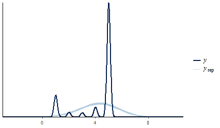
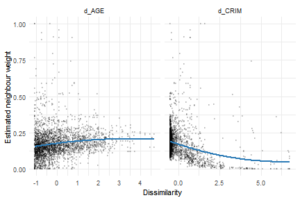
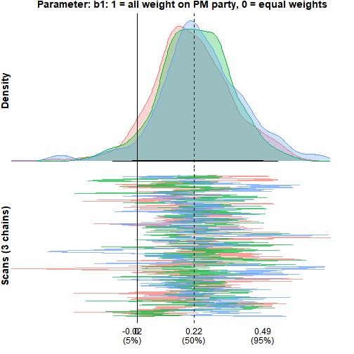
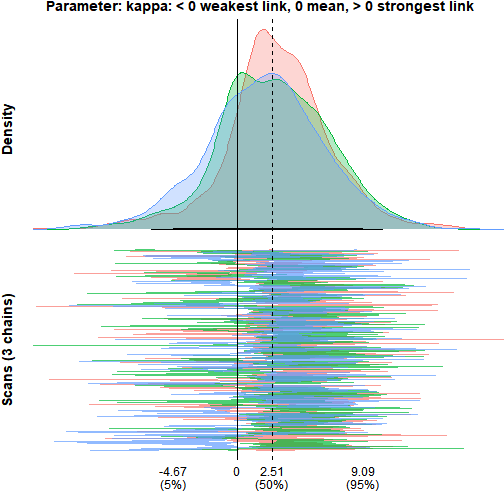

This vignette presents seven examples that show how the
multiple-membership multilevel model (MMMM) can be applied to network,
spatial, and aggregation problems. The first three cover the additive
micro-macro link: peer influence in a friendship network, neighbourhood
effects on home values, and how coalition parties shape government
survival. The last four continue the coalition example to showcase
aggregation beyond the weighted mean: distributional features
(fn("var")), estimating the aggregation function itself
(fn("smax", kappa = est())), cross-level interactions
through named blocks, and heterogeneous member effects
(re(1 + x)).
1. All friends, or just your best friend? (network regression)
The core question in this example is how peer influence adds up across a friendship group, using smoking as the behaviour of interest.
The data are the CILS4EU Germany Wave 1 friendship network, which covers classroom-level friendships in German secondary schools. Students nominated up to five friends and ranked them by closeness (1 = best friend, 5 = fifth-closest). Wave 2 smoking is predicted from Wave 1 friends’ smoking; the one-year lag ensures a student’s future behaviour cannot have caused her current friends’ behaviour.
The model uses the following variables:
| Variable | Role | Meaning |
|---|---|---|
ego |
id | Focal student (the group in the mm structure) |
alter |
id | Nominated friend (the member) |
smoking_w2 |
outcome | Ego’s Wave 2 smoking, one year later |
smoking_ego |
predictor | Ego’s own Wave 1 smoking |
gender_ego |
predictor | Ego’s gender |
smoking_alter |
predictor | Friend’s Wave 1 smoking (aggregated across friends) |
rank |
weight | Friendship closeness (1 = best friend, 5 = fifth-closest) |
n |
weight | Number of friends nominated by the ego |
Two models are fit and compared. The economics standard for this kind
of network problem is the linear-in-means model: every friend carries
equal weight, so what matters is the average across all of them,
implying that each friend exerts the same influence. The alternative is
that influence is concentrated: a single close friend drives most of the
effect while looser ties matter little. bml fits both and
compares them directly, changing only one line of the weight
function.
Model 1: linear-in-means
Every friend receives equal weight, w ~ 1/n, so the peer
term is the simple average of all nominated friends’ Wave 1 smoking.
mod_lim <-
bml(
smoking_w2 ~ smoking_ego + gender_ego + # outcome ~ ego-level predictors
mm( # multiple-membership term (the peers)
id = id(alter, ego), # member = alter (friend), group = ego
vars = vars(smoking_alter), # member variable to aggregate
w = w(~ 1/n, scale = TRUE), # equal weights, renormalised to sum to 1
RE = TRUE # member-level random effect
),
family = gaussian(), # continuous outcome
data = cils_long
)Model 2: best friend only
Only the closest-ranked friend contributes; all others are dropped.
rank == min(rank) evaluates to TRUE for the
closest-ranked friend within each ego’s friend set (rank 1), placing all
weight on that friend. With scale = TRUE the weight is
renormalised to 1 within each ego, so the peer term becomes that single
friend’s smoking.
Comparing the two models
bmlCompare() lays out the coefficient estimates and fit
statistics of several models side by side, one column per model, with
readable labels supplied through labels.
bmlCompare(
"Linear-in-means" = mod_lim,
"Best friend only" = mod_bf,
terms = c("(Intercept)", "smoking_ego", "gender_ego", "A_smoking_alter"),
labels = c("Intercept", "Own smoking (W1)", "Gender", "Peers' smoking (W1)")
)| Term | Linear-in-means | Best friend only |
|---|---|---|
| Intercept | 2.556 (2.345, 2.770) | 2.623 (2.448, 2.793) |
| Own smoking (W1) | 0.365 (0.337, 0.390) | 0.360 (0.334, 0.386) |
| Gender | 0.047 (-0.042, 0.133) | 0.059 (-0.025, 0.144) |
| Peers’ smoking (W1) | 0.042 (0.001, 0.084) | 0.026 (-0.000, 0.052) |
| N | 4002 | 4002 |
| DIC | 17029 | 18463 |
Both models find a positive peer effect: students whose friends smoke more tend to smoke more themselves one year later, over and above their own Wave 1 smoking. The own-smoking coefficient (about 0.36 in both models) dominates, which is expected since past behaviour is the strongest predictor of future behaviour.
The peer effect is present but modest. Under linear-in-means, averaging across all nominated friends gives a coefficient of about 0.04 (CI [0.00, 0.08]), which just clears zero. Limiting to the best friend gives about 0.03 (CI [-0.00, 0.05]): a smaller point estimate with a tighter interval that now just touches zero.
On fit, the linear-in-means model is clearly preferred (DIC 17,029 vs 18,463, a gap of over 1,400). Peer influence on smoking appears to be spread across the friend set rather than concentrated in the single closest tie.
Cross-validation: which aggregation does the data prefer?
DIC is convenient but crude; PSIS-LOO cross-validation compares the
models on their out-of-sample predictive density. For gaussian outcomes
bml monitors the pointwise log-likelihood in the generated
JAGS model, so loo() works directly on the fitted objects,
and loo::loo_compare() ranks them:
loo_lim <- loo(mod_lim)
loo_bf <- loo(mod_bf)
loo::loo_compare(loo_lim, loo_bf)#> elpd_diff se_diff
#> model1 0.0 0.0
#> model2 -37.1 9.8The linear-in-means model comes out on top: the best-friend model loses about 37 points of expected log predictive density (standard error about 10), agreeing with the DIC ranking. Both criteria point the same way — influence is spread over the whole friend set rather than concentrated in the closest tie.
A posterior predictive check makes sure the preferred model
reproduces the shape of the outcome at all. pp_check()
overlays replicated outcome distributions on the observed one:
pp_check(mod_lim)
The replicated densities track the observed distribution’s spread and skew; the discreteness of the smoking scale shows up as bumps the gaussian model smooths over, which is worth knowing but does not affect the aggregation comparison.
2. Air quality and home values (spatial regression)
This spatial example is based on Harrison & Rubinfeld (1978), who study the effect of air quality on home values, and the re-analysis by Bivand (2017).
The first example asked how a person’s friends combine to influence them. This example asks the spatial version of the same aggregation question: how do the surrounding tracts combine to shape a neighbourhood’s home values?
The 1970 Boston census tract data are used, treating each tract’s outcome as a function of its own attributes and those of its neighbours. The question added to the classical approach is whether every neighbour should count equally, or whether tracts weigh their neighbours by how similar they are.
Data and spatial weights
The data are the 1970 Boston Standard Metropolitan Statistical Area
census tracts shipped with spData. After dropping tracts
with no housing and tracts that are entirely institutional, 506 tracts
remain. Each tract records its median home value, the local
nitric-oxides concentration (the air-quality measure), and a handful of
standard housing and demographic covariates.
The outcome is lnCMEDV, the log of median home value,
which tames the skew in raw prices; every covariate is standardised so
the coefficients are directly comparable. The variables of interest
are:
| Variable | Role | Meaning |
|---|---|---|
tid |
id | Tract id (1 to 506) |
lnCMEDV |
outcome | Log median home value, the quantity modelled |
NOX |
predictor | Nitric-oxides concentration, the air-quality measure |
CRIM |
predictor | Per-capita crime rate |
RM |
predictor | Average rooms per dwelling |
DIS |
predictor | Weighted distance to Boston employment centres |
AGE |
predictor | Share of units built before 1940 |
Baseline bml: equal weights
The baseline uses w ~ 1/n, giving every neighbour equal
weight. This is the conventional MMMM: the membership structure is
present and variable weights are permitted, but here the weights are
fixed.
mod_bml <-
bml(
lnCMEDV ~ NOX + CRIM + RM + DIS + AGE + # outcome ~ own-tract covariates
mm(
id = id(tid_nb, tid), # member = neighbour tract, group = focal tract
vars = vars(NOX_nb + CRIM_nb + RM_nb + DIS_nb + AGE_nb), # neighbour covariates to aggregate
w = w(~ 1/n, scale = TRUE), # equal weights, normalised to sum to 1
RE = TRUE # neighbour-level random effect
),
family = gaussian(),
data = boston_df
)Parameterised weights: similarity across covariates
Equal weighting assumes every neighbour matters the same regardless of how similar it is to the focal tract. A natural alternative is that tracts are more strongly influenced by neighbours that resemble them, a spatial homophily effect. Rather than collapse similarity into a single number, the weight is allowed to depend on the dissimilarity in each covariate separately, using the functional form from Rosche (2026):
\[ w_{ij} = \frac{1}{1 + (n_i - 1)\exp\!\bigl(-(b_0 + b_1 \cdot d^{\text{CRIM}}_{ij} + b_2 \cdot d^{\text{AGE}}_{ij})\bigr)} \]
Each d is the standardised absolute difference between a
focal tract and its neighbour on that covariate. When all the
b’s are zero this collapses to 1/n_i, the
equal-weight baseline. A negative coefficient means neighbours that are
similar on that covariate (low d) receive more weight; a
positive coefficient means dissimilar neighbours dominate. Letting the
two dissimilarities enter on their own lets the model decide which kind
of similarity drives the aggregation, instead of imposing a single
combined measure.
mod_bml_w <-
bml(
lnCMEDV ~ NOX + CRIM + RM + DIS + AGE +
mm(
id = id(tid_nb, tid),
vars = vars(NOX_nb + CRIM_nb + RM_nb + DIS_nb + AGE_nb),
# weight as a function of covariate dissimilarity; nests 1/n when all b's are 0
w = w(~ 1 / (1 + (n - 1) * exp(-(b0 + b1 * d_CRIM + b2 * d_AGE))), scale = TRUE),
RE = TRUE
),
family = gaussian(),
prior = prior(normal(0, 1), class = "w"), # weakly informative; prevents exp() overflow
data = boston_df2
)The estimated weight-function parameters are:
bmlCompare(
"Similarity weights" = mod_bml_w,
component = "weights",
terms = c("w[b0] (mm.1)", "w[b1] (mm.1)", "w[b2] (mm.1)"),
labels = c("Weight intercept (b0)", "Crime dissimilarity (b1)", "Age dissimilarity (b2)")
)| Term | Similarity weights |
|---|---|
| Weight intercept (b0) | 1.561 (-0.282, 2.787) |
| Crime dissimilarity (b1) | -1.758 (-2.588, -1.165) |
| Age dissimilarity (b2) | 0.713 (0.074, 1.523) |
| N | 506 |
| DIC | 295 |
The crime-dissimilarity coefficient is about −1.76 (CI [−2.59, −1.16]), clearly negative, so neighbours with similar crime levels carry more weight. The age-dissimilarity coefficient is about 0.71 (CI [0.07, 1.52]), pointing the other way: neighbours with different age profiles carry more weight. The model picks up two kinds of similarity at once, in opposite directions.
Do the weights actually vary with similarity?
A direct check plots the estimated weight each neighbour received
against the dissimilarity between that neighbour and its focal tract. If
crime homophily drives the weights, low-d_CRIM pairs should
cluster toward high weights and high-d_CRIM pairs toward
low weights.

The two panels show the similarity effects acting in opposite directions. The weight falls as crime dissimilarity rises (the homophily the negative crime coefficient pointed to), while it rises gently with age dissimilarity, matching the positive age coefficient. Each panel holds only a partial view, since every neighbour’s weight reflects both dissimilarities at once, but the opposing slopes are visible.
Benchmark: spatial Durbin error model
The classical spatial benchmark is the SDEM, which models a tract’s outcome as a function of its own covariates, its neighbours’ covariates, and a spatially correlated error. It fits in seconds (no MCMC) and serves as a yardstick for the bml models.
mod_sdem <- errorsarlm(
lnCMEDV ~ NOX + CRIM + RM + DIS + AGE,
data = boston,
listw = boston_wlist,
Durbin = ~ NOX + CRIM + RM + DIS + AGE # include neighbour-covariate effects (WX)
)Model comparison
The two bml models and the SDEM benchmark are placed in one table.
The SDEM’s neighbour-covariate (lag.) terms are matched to
the bml neighbour effects, and all rows are given readable labels.
| Term | Equal weights (1/n) | Similarity weights | SDEM (benchmark) |
|---|---|---|---|
| Intercept | 3.033 (2.997, 3.070) | 3.022 (2.987, 3.057) | 3.015 (2.950, 3.080) |
| Air quality (NOX) | -0.106 (-0.161, -0.048) | -0.075 (-0.131, -0.015) | -0.112 (-0.160, -0.064) |
| Crime | -0.061 (-0.082, -0.041) | -0.055 (-0.080, -0.030) | -0.067 (-0.086, -0.047) |
| Rooms | 0.157 (0.137, 0.177) | 0.165 (0.147, 0.182) | 0.169 (0.150, 0.187) |
| Distance to employment | -0.096 (-0.208, 0.015) | -0.071 (-0.164, 0.027) | -0.086 (-0.169, -0.003) |
| Pre-1940 share | -0.095 (-0.129, -0.062) | -0.103 (-0.131, -0.075) | -0.088 (-0.118, -0.057) |
| Air quality (neighbours) | 0.020 (-0.072, 0.111) | -0.001 (-0.090, 0.085) | 0.012 (-0.076, 0.101) |
| Crime (neighbours) | -0.132 (-0.184, -0.082) | -0.143 (-0.212, -0.074) | -0.103 (-0.156, -0.050) |
| Rooms (neighbours) | 0.073 (0.025, 0.121) | 0.092 (0.049, 0.136) | 0.040 (-0.006, 0.085) |
| Distance (neighbours) | -0.012 (-0.145, 0.117) | -0.026 (-0.144, 0.086) | -0.038 (-0.148, 0.072) |
| Pre-1940 (neighbours) | 0.007 (-0.066, 0.080) | 0.014 (-0.051, 0.079) | -0.020 (-0.094, 0.055) |
| Weight intercept (b0) | — | 1.561 (-0.282, 2.787) | — |
| Crime dissimilarity (b1) | — | -1.758 (-2.588, -1.165) | — |
| Age dissimilarity (b2) | — | 0.713 (0.074, 1.523) | — |
Model fit (the SDEM is a maximum-likelihood model and has no DIC, so only the two bml models are compared on fit):
| Model | DIC |
|---|---|
| Equal weights (1/n) | 278 |
| Similarity weights | 295 |
The own and neighbour coefficients from the equal-weight bml model
line up with the SDEM, the reassurance worth having: the bml baseline
reproduces the classical benchmark. If equal-weight neighbour effects
were all that was needed, errorsarlm would serve, and it
would be faster. What the parameterised weight function adds is the
aggregation itself as something to estimate, which the SDEM cannot do.
On fit, the equal-weight model keeps the lower DIC (278 vs 295): the
similarity structure in the weights is real — both dissimilarity
coefficients sit away from zero — but the added flexibility does not pay
for itself in overall fit here. The SDEM, a maximum-likelihood model,
has no DIC, so it serves only as a coefficient yardstick.
3. Political parties and the survival of coalition governments (micro-macro regression)
The previous two examples asked how peers or neighbours combine to shape an outcome. This example asks the same of coalition politics: how do the parties in a coalition combine to determine whether the government survives? Each coalition government is composed of multiple parties, and each party brings its own features such as organisational traits, funding structure, and internal cohesion. The MMMM question is not just whether party characteristics matter, but how they aggregate from the party level up to the government level, and which parties weigh more.
This example also keeps the MCMC control arguments
(iter, warmup, chains,
seed) visible in the calls, because convergence and
posterior summaries are the focus of the final section.
The data
The coalgov dataset ships with the package. Each row is
one party’s participation in one government: 2,077 party-government
pairs spanning 628 governments and 312 parties across 29 countries.
| Variable | Level | Meaning |
|---|---|---|
gid |
id | Government identifier (the group) |
pid |
id | Party identifier (the member) |
dur_wkb |
outcome | Government duration in days |
event_wkb |
outcome | 1 = government fell from conflict; 0 = still standing when observed |
majority |
government | 1 = majority coalition, 0 = minority |
mwc |
government | 1 = minimal winning coalition, 0 = oversized |
n |
government | Number of parties in the coalition |
finance |
party | Party’s dependence on outside money rather than dues (standardised) |
prime |
party | TRUE if the party holds the prime ministership, FALSE otherwise |
The outcome is the pair (dur_wkb, event_wkb), the
standard way survival data is recorded: a duration, plus a flag for
whether the duration ended in the event of interest (the government
falling) or was merely the last point at which the government was
observed in office.
Equal-weight baseline
Every party contributes equally to the coalition’s financial profile. This is the natural starting point, where each party is assumed to contribute equally to the outcome.
mod_eq <-
bml(
Surv(dur_wkb, event_wkb) ~ 1 + majority + mwc + # survival outcome ~ government covariates
mm(
id = id(pid, gid), # member = party, group = government
vars = vars(finance), # party variable to aggregate
w = w(~ 1/n, scale = TRUE), # equal weights
RE = TRUE # party-level random effect
),
family = weibull(), # survival (duration) outcome
monitor = TRUE, # store MCMC draws (needed for diagnostics/plots)
iter = 5000, # iterations per chain
warmup = 500, # discard the first 500
chains = 3, # number of chains
seed = 1, # reproducibility
data = coalgov
)The finance coefficient is negative and away from zero: coalitions whose parties depend more on outside money tend to fall sooner. The coefficient is on the log-survival-time scale, so negative means shorter expected duration.
Before testing an alternative weighting scheme, it helps to see how much of the variation in government survival originates at the party level.
varDecomp(mod_eq)| Component | sigma | sigma_sd | ICC | ICC_sd |
|---|---|---|---|---|
| Residual | 0.83 | 0.04 | 0.63 | 0.07 |
| MM (sigma.mm.1) | 1.07 | 0.17 | 0.37 | 0.07 |
About 37% of the variance in government survival sits at the party level. Governments that share parties are more similar to each other than governments that do not, beyond anything the covariates explain. The multiple-membership structure is not just added complexity: more than a third of what drives coalition survival is carried by the parties themselves.
Letting weights vary across parties
Equal weighting assumes a small junior partner shapes the coalition’s financial profile exactly as much as the party holding the prime ministership. That assumption can be replaced with an estimate: the weight function lets the PM party carry more or less weight, with the amount estimated from the data.
A mixing parameter dials between the PM’s party and the other
parties. At b1 = 1 all weight goes to the prime minister’s
party; at b1 = 0 a baseline aggregation rule is recovered.
There are two natural baselines to blend against, and they ask different
questions, so both are fit and compared.
Prime minister’s party against equal weights
\[ w_{ij} = b_1 \cdot \text{prime}_{ij} + (1 - b_1)\cdot \tfrac{1}{n_i} \]
This first blend puts the PM party against equal weighting. At
b1 = 1, the PM party carries all the weight; at
b1 = 0 it is the 1/n baseline, so the
parameter measures how far the data pull away from equal weights toward
the prime minister’s party.
mod_pm_n <-
bml(
Surv(dur_wkb, event_wkb) ~ 1 + majority + mwc +
mm(
id = id(pid, gid),
vars = vars(finance),
w = w(~ b1 * prime + (1 - b1) * (1/n), scale = TRUE), # blend PM party vs equal weights
RE = TRUE
),
family = weibull(),
prior = prior(normal(0, 1), class = "w"),
monitor = TRUE,
iter = 5000,
warmup = 500,
chains = 3,
seed = 1,
data = coalgov
)The weight parameter w[prime] (mm.1) is about 0.23, with
a 95% interval of [-0.10, 0.55]. The estimate is positive, so the data
lean toward the prime minister’s party carrying more weight than equal
aggregation would assign it, but the interval includes zero, so equal
weighting cannot be ruled out. The finance effect is about -0.26 [-0.51,
-0.03], close to the baseline’s -0.31 and still clearly negative: the
story that coalitions reliant on outside money fall sooner holds whether
or not the PM party is up-weighted.
Prime minister against seat share
\[ w_{ij} = b_1 \cdot \text{prime}_{ij} + (1 - b_1)\cdot \text{pseat}_{ij} \]
This second blend puts the PM party against seat-share
proportionality. At b1 = 0 weights track each party’s seat
share, so the parameter measures how far the data pull away from
proportionality toward the prime minister’s party.
mod_pm_p <-
bml(
Surv(dur_wkb, event_wkb) ~ 1 + majority + mwc +
mm(
id = id(pid, gid),
vars = vars(finance),
w = w(~ b1 * prime + (1 - b1) * pseat, scale = TRUE), # blend PM party vs seat share
RE = TRUE
),
family = weibull(),
prior = prior(normal(0, 1), class = "w"),
monitor = TRUE,
iter = 5000,
warmup = 500,
chains = 3,
seed = 1,
data = coalgov
)Here w[prime] (mm.1) is about 0.12 with a 95% interval
of [-0.27, 0.54]. The estimate is again positive with the interval
spanning zero. The smaller point estimate and wider interval mean the
pull toward the PM party is even weaker than in the first
parameterisation. The finance effect changes to about -0.22 [-0.45,
0.01], its interval now just touching zero.
Comparing the models
bmlCompare(
"Equal weights (1/n)" = mod_eq,
"PM vs equal (1/n)" = mod_pm_n,
"PM vs seat share" = mod_pm_p,
terms = c("A_finance", "w[prime] (mm.1)"),
labels = c("Finance", "PM weight (b1)")
)| Term | Equal weights (1/n) | PM vs equal (1/n) | PM vs seat share |
|---|---|---|---|
| Finance | -0.313 (-0.562, -0.064) | -0.263 (-0.508, -0.026) | -0.220 (-0.450, 0.010) |
| PM weight (b1) | — | 0.229 (-0.098, 0.549) | 0.123 (-0.270, 0.542) |
| N | 628 | 628 | 628 |
| DIC | 3864 | 3868 | 3854 |
Across both blends the weight parameter is positive but its interval includes zero, so the prime minister’s party does not measurably outweigh its partners in shaping the coalition’s financial profile, whether compared against equal weights or against seat share. The finance effect weakens slightly across the table, from -0.31 at baseline to -0.26 and then -0.22, staying negative throughout except for the last blend’s interval, which just touches zero. On fit, the PM-vs-seat-share blend has the lowest DIC (3854 against the baseline’s 3864), with PM-vs-equal-weights slightly above the baseline (3868). The gaps are small, and they come from a parameter that cannot be distinguished from zero.
MCMC diagnostics
All models were fit with monitor = TRUE, which stores
the posterior draws so convergence can be checked. The diagnostics below
are for the PM-vs-equal-weights model; the other models behave the same
way.
mcmcDiag() reports the standard convergence statistics
for the chosen parameters:
| b.w.1 | b.fn.1 | |
|---|---|---|
| Gelman/Rubin convergence statistic | 1.014 | 1.004 |
| Geweke z-score | 0.323 | -0.209 |
| Heidelberger/Welch p-value | 0.351 | 0.301 |
| Autocorrelation (lag 50) | -0.032 | -0.031 |
The diagnostics are clean. Both Gelman-Rubin statistics are about 1.0, well under the 1.1 threshold; the Geweke z-scores fall within the usual ±2 bounds, the Heidelberger-Welch p-values exceed 0.05, and lag-50 autocorrelation is negligible. The chains converged, are stationary, and mixed well.
monetPlot() shows the posterior density (top) and the
trace across iterations (bottom) for a single parameter — here the
weight parameter b1:
monetPlot(mod_pm_n, "b.w.1", label = "b1: 1 = all weight on PM party, 0 = equal weights")
The posterior density is a single hump centred at about 0.23, just right of the zero line, with most of its mass to the right but a clear slice left of zero, so zero stays inside the 95% interval. In the trace panel the three chains overlap and cover the same range with no separation — the visual counterpart to the clean diagnostics above.
brms-style accessors
The standard post-estimation vocabulary works as it does in brms.
fixef() returns every class-"b" coefficient
labeled by term, and as_draws_df() converts the stored
chains to the posterior package’s format, unlocking
summarise_draws(), rhat(), and the rest of
that toolchain:
fixef(mod_pm_n)#> Estimate Est.Error Q2.5 Q97.5
#> (Intercept) 6.7998045 0.1472916 6.51399566 7.09723696
#> majority 0.2287003 0.1515294 -0.07048843 0.52734023
#> mwc 0.5017811 0.1445882 0.23663764 0.79669163
#> A_finance -0.2629192 0.1250373 -0.50811416 -0.02572199
draws <- as_draws_df(mod_pm_n)
posterior::summarise_draws(posterior::subset_draws(draws, variable = "b.w.1"))#> # A tibble: 1 × 10
#> variable mean median sd mad q5 q95 rhat ess_bulk ess_tail
#> <chr> <dbl> <dbl> <dbl> <dbl> <dbl> <dbl> <dbl> <dbl> <dbl>
#> 1 b.w.1 0.229 0.224 0.158 0.140 -0.0210 0.493 1.01 149. 247.4. Does the average matter, or the spread? (emergent features)
The three examples so far all aggregated member attributes with a weighted mean: the additive micro-macro link. But a coalition whose parties are uniformly moderate on some trait and a coalition mixing one extreme party with several counterbalancing ones can have the same mean. If what breaks governments is internal contrast rather than the average level, the mean is silent about the mechanism.
fn() selects the aggregation function a block applies to
the weighted member records. fn("sum") (the default
everywhere above) produces the weighted mean A_finance;
fn("var") produces the weighted variance
V_finance, a feature of the whole set. Blocks stack, so
both features can enter one model, each with its own main-model
coefficient:
mod_var <-
bml(
Surv(dur_wkb, event_wkb) ~ 1 + majority + mwc +
mm(
id = id(pid, gid),
vars = vars(finance),
w = w(~ 1/n, scale = TRUE),
RE = TRUE # mean block keeps the party random effects
) +
mm(
id = id(pid, gid),
vars = vars(finance),
w = w(~ 1/n, scale = TRUE),
fn = fn("var") # spread block: V_finance
),
family = weibull(),
iter = 5000,
warmup = 500,
chains = 3,
seed = 1,
data = coalgov
)
bmlCompare(
"Mean only" = mod_eq,
"Mean + spread" = mod_var,
terms = c("A_finance", "V_finance"),
labels = c("Finance (mean)", "Finance (spread)")
)| Term | Mean only | Mean + spread |
|---|---|---|
| Finance (mean) | -0.313 (-0.562, -0.064) | -0.306 (-0.600, -0.006) |
| Finance (spread) | — | -0.015 (-0.268, 0.234) |
| N | 628 | 628 |
| DIC | 3864 | 3868 |
The mean effect A_finance is essentially unchanged by
adding the spread term (about -0.31 in both models), which is the first
thing to check: the two features answer different questions rather than
competing for the same variation. The spread coefficient
V_finance is about -0.02 with a 95% interval of [-0.27,
0.23] — a null. For these data, what matters about a coalition’s
financial exposure is its level, not its internal contrast, and the DIC
agrees (3864 for the mean-only model vs 3868 with the spread term). A
null on the spread is itself informative: it is the empirical license
behind the mean-only models of Example 3, checked rather than
assumed.
Both aggregation functions read the same weighted member records; only the reduction differs. That is the sense in which the variance term is emergent: it is a property of the set that no single party’s contribution can carry.
5. What is the aggregation function? (estimating f itself)
Example 4 chose the candidate functions by hand and let the fit
statistics adjudicate. The smooth-max family goes one step further and
makes the aggregation function itself the estimand.
fn("smax", kappa) computes
\[ \mathrm{smax}(x;\kappa) = \tfrac{1}{\kappa}\,\log \textstyle\sum_k w_k e^{\kappa x_k}, \]
which runs from the minimum of the member attributes (as
\(\kappa \to -\infty\)) through the
weighted mean (at \(\kappa \to
0\)) to the maximum (as \(\kappa \to +\infty\)). With
kappa = est() the data choose the point on that path: is
government survival driven by the coalition’s average financial
exposure, by its least exposed party (weakest link), or by its most
exposed one?
mod_smax <-
bml(
Surv(dur_wkb, event_wkb) ~ 1 + majority + mwc +
mm(
id = id(pid, gid),
vars = vars(finance),
w = w(~ 1/n, scale = TRUE),
fn = fn("smax", kappa = est()) # kappa < 0: min-like, kappa > 0: max-like
) +
mm(
id = id(pid, gid),
w = w(~ 1/n, scale = TRUE),
RE = TRUE # party random effects in their own block
),
family = weibull(),
iter = 5000,
warmup = 500,
chains = 3,
seed = 1,
data = coalgov
)Shape parameters like kappa are not coefficients: they
are reported in their own component (fn[...]), never in the
coefficient table, and take priors through
prior(..., class = "fn"). get_prior() lists
what is settable. The posterior of kappa answers the
question directly:
monetPlot(mod_smax, "fn.kappa.1", label = "kappa: < 0 weakest link, 0 mean, > 0 strongest link")
The feature’s coefficient is clearly negative
(smax_finance about -0.24 [-0.52, -0.06]), so the exposure
feature matters — but the posterior for kappa is centred
near 2.5 with a 95% interval of roughly [-6, 11], spanning weakest-link
through strongest-link readings. Two things follow. First, the caveat
that belongs with this estimand: kappa reaches the outcome
only through the feature, so it is identified only insofar as
differently-shaped aggregates fit differently — and with small
coalitions (most have two to four parties), the min, mean, and max of
finance are highly correlated, so the likelihood is nearly flat in
kappa. Second, a diffuse posterior here is not a failure of
the sampler; it is the honest statement that these data cannot pin down
the aggregation function, which is exactly what making f an
estimand is for.
6. Does context change the aggregate’s effect? (cross-level interaction)
Coalition majority status is a government-level (macro) attribute. Because it is constant across the parties of a government, interacting it with the aggregated finance profile collapses to a product of two group-level quantities: a cross-level interaction.
In bml this is written by giving the block a
name and referencing that name in the main formula. The
macro variable must also appear as a main effect:
mod_xl <-
bml(
Surv(dur_wkb, event_wkb) ~ 1 + majority + mwc + Afin:majority +
mm(
name = Afin, # named block: referencable feature
id = id(pid, gid),
vars = vars(finance),
w = w(~ 1/n, scale = TRUE),
RE = TRUE
),
family = weibull(),
iter = 5000,
warmup = 500,
chains = 3,
seed = 1,
data = coalgov
)
fixef(mod_xl)#> Estimate Est.Error Q2.5 Q97.5
#> (Intercept) 6.8099757 0.1533719 6.51490635 7.1262164
#> majority 0.2362897 0.1603613 -0.08576551 0.5481584
#> mwc 0.4907232 0.1503586 0.19334021 0.7821277
#> Afin -0.2281652 0.2198792 -0.65680427 0.2096516
#> Afin:majority -0.1072704 0.2371408 -0.57573029 0.3637120The interaction row Afin:majority asks whether the
financial-exposure penalty differs between majority and minority
governments. The estimate is about -0.11 [-0.58, 0.36]: no evidence that
majority status moderates the exposure penalty. The name refers to the
block’s fixed feature only — the interaction multiplies
majority with the aggregate A_finance, not
with the party random effects, which continue to enter additively.
7. Heterogeneous member effects (explained and residual)
Everything so far assumed each party’s finance trait carries the same effect. Allowing the member effect to vary decomposes into two parts, and both fit in a single block:
-
Explained heterogeneity: the effect differs by an
observed member attribute — here, whether the party holds the prime
ministership. That is the member-paired interaction
vars(finance:prime), aggregated as its own featureH_finance_prime. -
Residual heterogeneity: parties differ in ways no
covariate captures — a random slope,
re(1 + finance), whose spreadsd(finance)measures how much effect heterogeneity remains after the explained part.
mod_het <-
bml(
Surv(dur_wkb, event_wkb) ~ 1 + majority + mwc +
mm(
id = id(pid, gid),
vars = vars(finance + finance:prime), # mean effect + explained heterogeneity
w = w(~ 1/n, scale = TRUE),
RE = re(1 + finance) # random intercept + residual slope
),
family = weibull(),
iter = 5000,
warmup = 500,
chains = 3,
seed = 1,
data = coalgov
)
tidy(mod_het) |>
dplyr::filter(term %in% c("A_finance", "H_finance_prime",
"sd(Intercept) (mm.1)", "sd(finance) (mm.1)"))#> # A tibble: 4 × 6
#> term estimate std.error conf.low conf.high component
#> <chr> <dbl> <dbl> <dbl> <dbl> <chr>
#> 1 A_finance -0.403 0.184 -0.771 -0.0457 fixed
#> 2 H_finance_prime 0.158 0.313 -0.440 0.738 fixed
#> 3 sd(Intercept) (mm.1) 0.633 0.285 0.0784 1.12 random
#> 4 sd(finance) (mm.1) 0.804 0.251 0.337 1.31 randomThree quantities carry the story. A_finance is the
average finance effect across parties. H_finance_prime is
the explained half of the heterogeneity: about 0.16 [-0.44, 0.74], so
the PM party’s financial exposure does not measurably carry a different
effect than its partners’ — consistent with the weight-function analysis
in Example 3, which asked a related question through the weights instead
of the effects. sd(finance) is the residual half: about
0.80 [0.34, 1.31], substantial party-to-party variation in the finance
effect that no observed attribute accounts for. Random slopes default to
being independent of the random intercepts;
re(1 + finance, cor = TRUE) opts into the correlated
version.